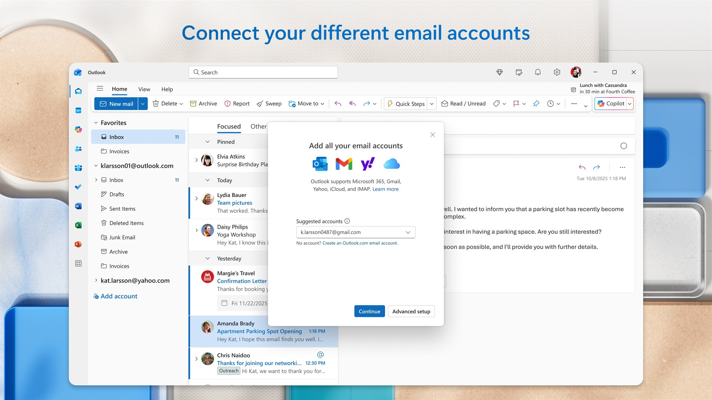
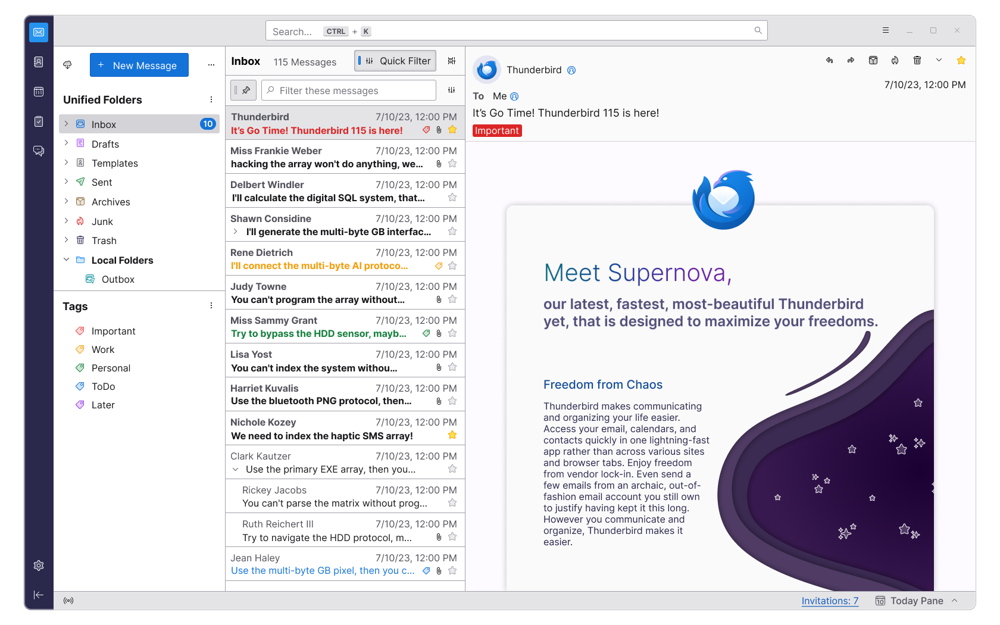
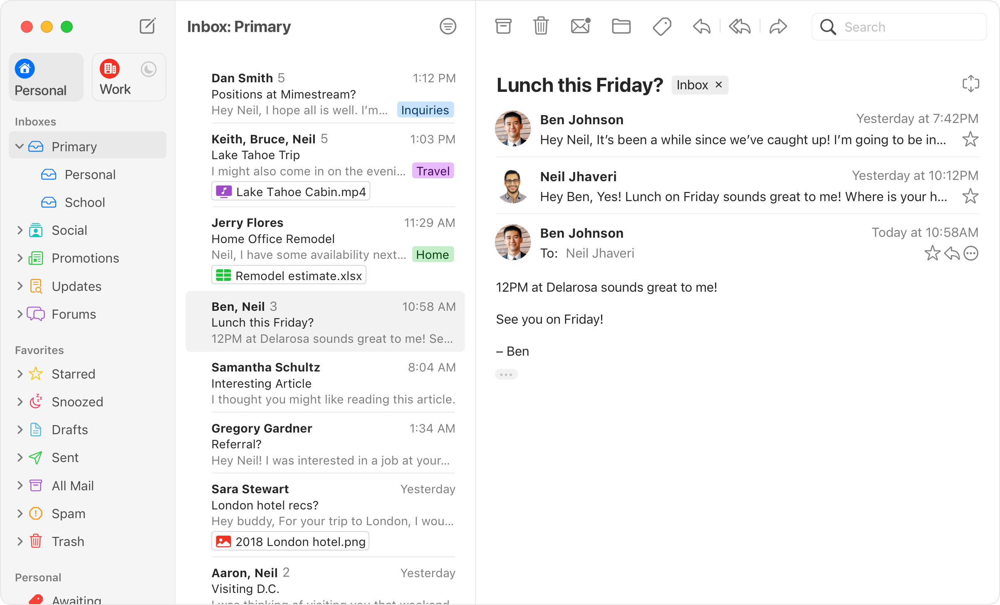
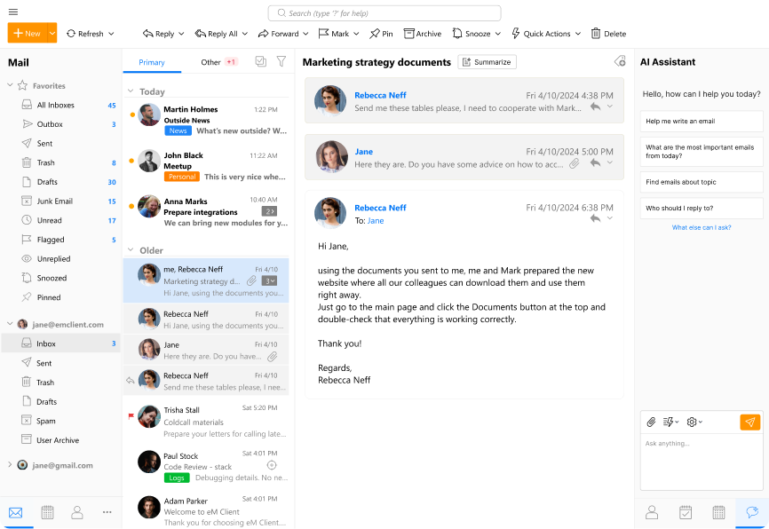
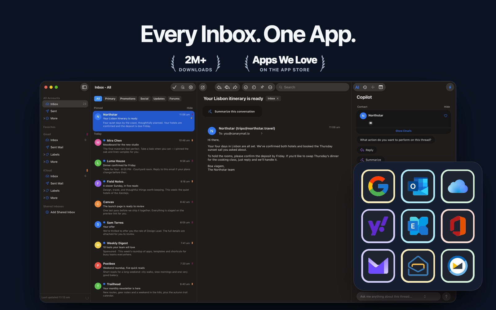
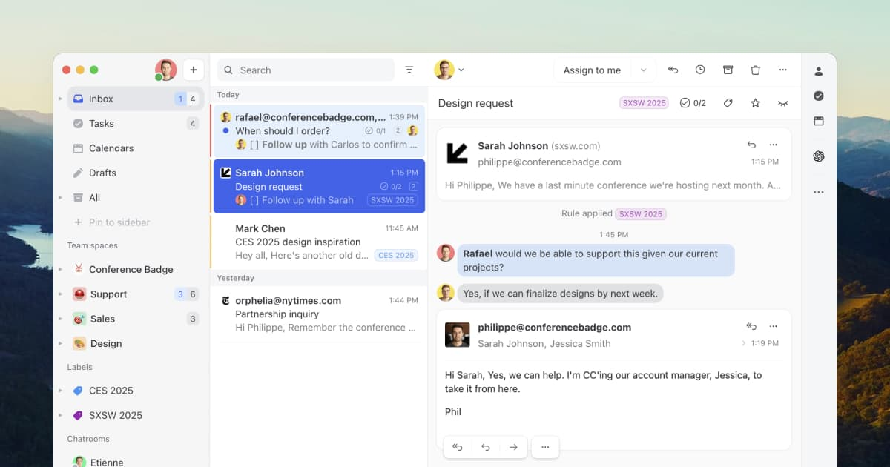

邮件客户端 UI 参考
7 个成熟产品的主界面，用于确定 MailDesk 的布局、密度与配色方向

Outlook (new, Windows)
微软新版 Outlook：左侧 App Rail（邮件/日历/联系人/To Do 切换）+ 账户分组 + Focused/Other 分栏 + 右侧阅读窗格。顶部是 Ribbon 式命令条。
chrome 最重、信息层级最完整

Thunderbird 115 Supernova
极窄图标栏 + 统一文件夹（Unified Folders）+ 标签（Tags）分区 + 列表/阅读器。工具栏与搜索都收在列表列顶部。
结构最接近我们要做的三栏

Mimestream (macOS)
最干净的实现：账户切换做成顶部两个大胶囊（Personal/Work），文件夹树、列表、会话气泡式阅读器；颜色仅用于标签。
排版与留白的参考价值最高

eM Client
传统桌面三栏 + 右侧 AI Assistant 固定侧栏；列表行有发件人头像、分类色块、附件图标。
信息密度与行高控制得最好

Canary Mail (深色)
深色主题示范：面板用不同明度的深灰分层，选中项用品牌蓝填充，正文卡片式浮起。
暗色 token 设计的直接参考

Missive
团队协作式：会话（Thread）为中心，右侧是对话流而非单封邮件；大量圆角气泡与标签胶囊。
会话聚合与标签体系
Spark Desktop
智能收件箱（Smart Inbox）把邮件自动分到 People/Notifications/Newsletters 卡片组；左侧是极简文件夹。
分组卡片式列表的思路